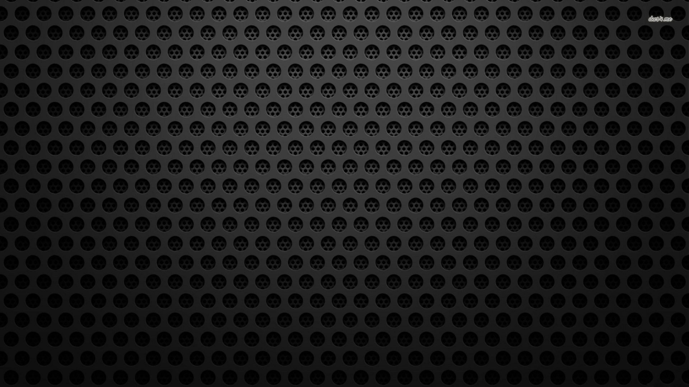
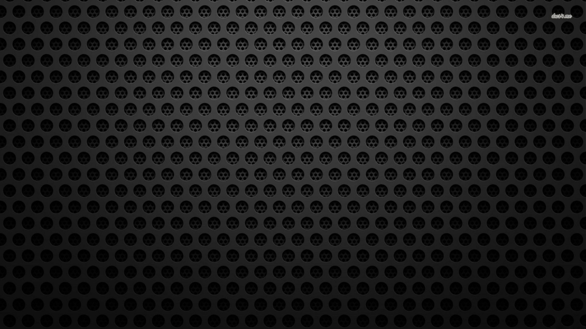

Right click on the picture, and save it onto your computer. You can then set it as your wallpaper.
Linus Torvalds (the father of Linux) casually mentioned that he was rather fond of Penguins, so Tux the penguin is the logo used to represent Linux. That's why you see his (or maybe her) image in the first wallpapers.


 
